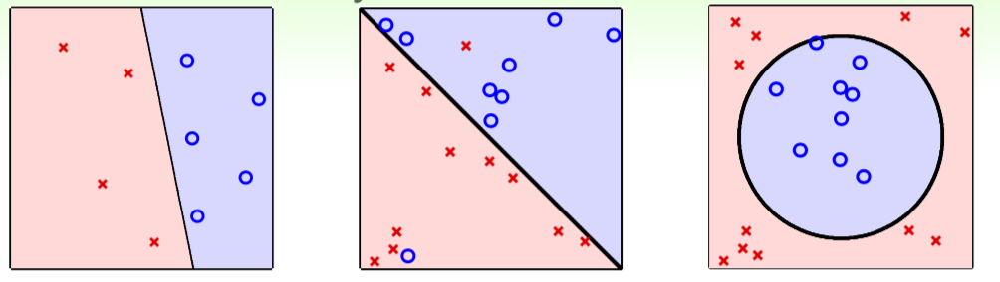

Learning with Different Output Space \(\gamma\)
Binary classification
Y = {−1, +1}

Multiclass Classification
- classify US coins (1c, 5c, 10c, 25c) by (size, mass)
- \(\gamma = {1c,5c,10c,25c}\),or \(\gamma = {1,2,··· ,K}\) (abstractly)
- binary classification: special case with K =2

Regression
- \(\gamma = \mathbb{R}\) or \(\gamma = [lower, upper] \subset \mathbb{R}\) (bounded regression)
Structured Learning: Sequence Tagging Problem
- a fancy but complicated learning problem
- sentence -> structure (class of each word)
- \(\gamma = \{PVN,PVP,NVN,PV,···\}\), not including VVVVV
- huge multiclass classification problem (\(structure \equiv hyperclass\)) without explicit class definition
Learning with Different Data Label \(y_n\)
Supervised learning
- every \(x_n\) comes with corresponding \(y_n\)
Unsupervised learning
- clustering
- articles -> topics
- consumer profiles -> consumer groups
- density estimation: {xn} -> density(x)
- i.e. traffic reports with location -> dangerous areas
- outlier detection: {xn} -> unusual(x)
- i.e. Internet logs -> intrusion alert
Semi-supervised learning
- leverage unlabeled data to avoid expensive labeling

Reinforcement Learning
- Teach Your Dog: Say Sit Down
- cannot easily show the dog that \(y_n\) = sit when \(x_n\) = sit down
- but can punish to say \(\hat{y_n}\) = pee is wrong
- but can reward to say \(\hat{y_n}\) = sit is good
- learn with partial/implicit information (often sequentially)
Learning with different Protocol \(f \rightarrow (x_n,y_n)\)
Batch Learning
- batch supervised multiclass classification: learn from all known data
Online Learning:
- hypothesis improves through receiving data instances sequentially
Active Learning: Learning by ‘Asking’
- improve hypothesis with fewer labels (hopefully) by asking questions strategically
Learning with different Input Space \(\chi\)
- concrete features: each dimension of \(\chi \in \mathbb{R}\) represents sophisticated physical meaning
- Raw Features
- simple physical meaning; thus more difficult for ML than concrete features
- often need human or machines to convert to concrete ones
- Abstract Features: again need feature conversion/extraction/construction